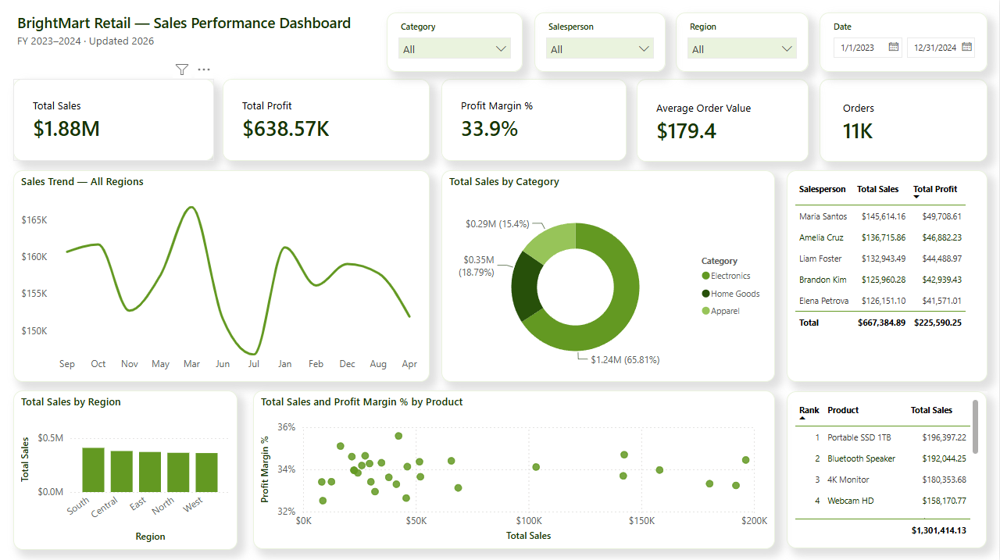
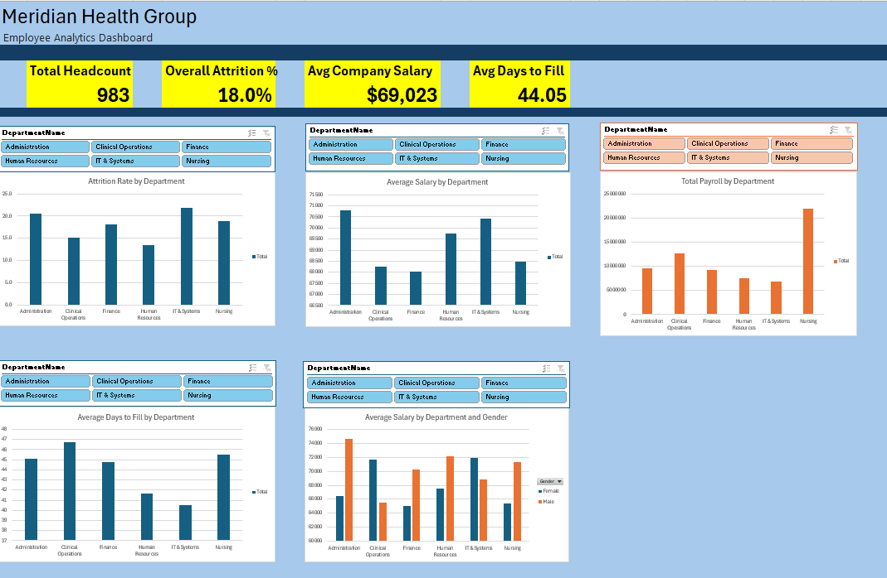

Cum Laude graduate, BS Information Technology from Cavite State University, with hands-on experience in SQL, database design, and dashboard reporting built across independent analytics projects and a government-office internship.
I like taking messy, real-world-shaped data — duplicates, missing values, inconsistent formats — and turning it into something a decision-maker can actually act on. Comfortable working independently and picking up new tools quickly.


Cum Laude graduate open to entry-level data analyst, BI, or data specialist roles. Happy to walk through any project in more detail.